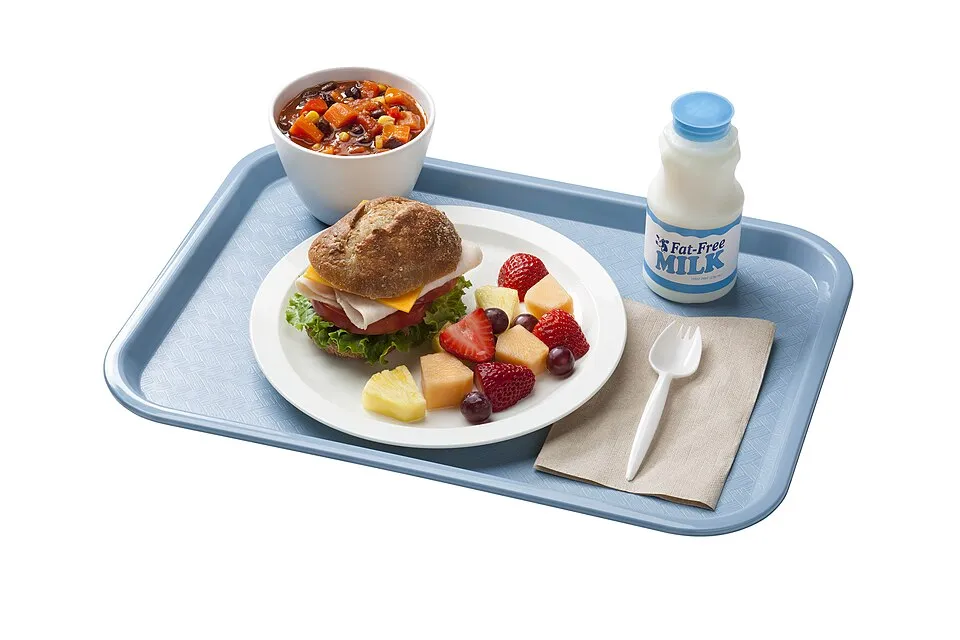

English · Food
My weekly menu
What would you like for lunch at school this week? And why?

Words
Food words
Tap a picture and listen. Say it after me. Choose a language to see the translation.
Game
Listen and tap
0 / 0
Grammar
a / an or some?
Can you count it? One apple, two apples → an apple. You can't count water → some water.
Look
School lunch around the world
Before you open a photo, guess: where is it from? What can you see? “I can see some rice and…”
Think
A healthy plate
Tap a food, then tap where it goes on the plate.
Choose a food.
Vegetables
and fruithalf
and fruithalf
Grainsa quarter
Proteina quarter
Listening
At the school canteen
Listen to Amira and the cook. First with the text hidden. What does Amira choose?
Speak
I'd like… because…
Tap one piece from each column. Then say your sentence to a partner.
On ? I'd like ? because ?.
Mission
Our class weekly menu
Tap a dish to change it. Make a healthy week: is there fish? Vegetables? Fruit every day?
Before you go
Say it out loud
On Friday I'd like because .
I don't like , but I like .
Can I have some , please?
How am I doing?